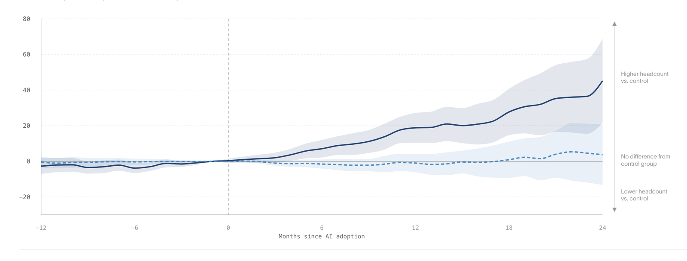

Ramp와 Revelio가 미국 기업 21,559곳의 실제 AI 지출과 고용을 연결해 분석했습니다.
AI에 가장 많이 투자한 고강도 도입 기업은 2년간 고용을 10.2% 늘렸습니다.
신입 채용은 12% 늘었고, 저강도 도입 기업은 유의미한 변화가 없었습니다.
AI가 일자리를 없앤다고 확신하셨습니까?
정작 AI에 가장 많이 투자한 회사들이 사람을 가장 많이 뽑았습니다.
AI가 사람 일자리를 빼앗는다는 이야기는 이제 상식처럼 굳었습니다. 감원 발표마다 AI가 이유로 붙습니다. 신입 자리가 먼저 사라진다는 경고도 흔합니다. 그런데 이 통념은 대부분 설문과 예측에 기대고 있습니다.
이번 연구는 다릅니다. 회사가 실제로 AI에 얼마를 썼는지, 그 뒤 사람을 얼마나 뽑았는지를 실측 데이터로 이었습니다. 결과는 통념과 반대였습니다. AI에 돈을 가장 많이 쓴 회사가 고용을 가장 많이 늘렸습니다. 당신 조직의 AI 예산이 감원의 신호인지 채용의 신호인지, 다시 물어야 합니다.
기존 AI 고용 연구는 대부분 설문이나 거시 통계에 의존했습니다. 이번엔 Ramp의 법인카드와 청구 지출 기록에서 실제 AI 지출을 뽑아, Revelio의 기업별 인력 데이터와 연결했습니다. 대상은 미국 기업 21,559곳, 기간은 2021년 1월부터 2026년 2월까지입니다. 파운데이션 모델, GPU 클라우드, 코딩 에이전트 같은 AI 지출을 3개월 연속 100달러 이상 쓴 첫 시점을 도입으로 봤습니다. 일회성 실험이 아니라 지속적 사용을 잡아낸 것입니다.
첫째, 성장은 '고강도 도입' 기업에만 나타났습니다. AI를 도입한 기업은 이후 고용이 빨라졌습니다. 다만 그 효과는 거의 전부 고강도 도입 기업에서 나왔습니다. AI에 가장 많이 투자한 기업은 도입 후 2년간 고용을 10.2% 늘렸습니다. 반면 저강도 도입 기업은 통계적으로 의미 있는 변화가 없었습니다. AI를 썼다는 사실보다, 얼마나 깊이 썼는가가 갈랐습니다.

두 집단을 가른 것은 투자 강도입니다. 저강도 도입 기업은 직원 1인당 월 약 2.78달러를 AI에 썼습니다. 고강도 도입 기업은 약 33.67달러로, 열 배가 넘습니다. 얕게 발만 담근 도입은 고용 곡선을 거의 움직이지 못했습니다.
둘째, 신입 채용이 오히려 더 빨리 늘었습니다. AI가 가장 먼저 없앨 자리로 흔히 신입이 꼽힙니다. 데이터는 반대였습니다. 고강도 도입 기업의 신입 채용은 2년간 12% 늘었습니다. 전체 고용 증가율보다 높은 수치입니다. 늘어난 자리도 특정 직군에 몰리지 않았습니다. 엔지니어링, 영업, 관리, 고객서비스까지 두루 퍼졌습니다.
셋째, 이득은 고르게 퍼지지 않았습니다. 좋은 소식에는 단서가 붙습니다. AI를 깊이 도입한 기업은 애초에 남달랐습니다. 규모가 더 크고, 엔지니어 비중이 높고, 벤처 투자를 받았고, 이미 빠르게 성장하던 회사였습니다. 이런 기업이 도입 후 더 빨리 컸습니다. 섹터로 보면 성장은 정보통신(Information)에 쏠렸습니다. 그래서 이 결과는 모든 회사의 미래가 아니라, 앞서 달리던 회사가 더 앞서간 그림에 가깝습니다.
우리 조직의 AI 지출을 직원 1인당 월 금액으로 환산해 봅니다. 고용 성장은 도입 여부가 아니라 투자 강도에서 갈렸습니다. 얕은 도입은 성과를 거의 못 냈다는 점을 예산 논의의 출발점으로 삼습니다. (이번 주)
AI가 신입을 대체한다는 통념과 달리, 깊이 도입한 기업은 신입을 더 뽑았습니다. 신입 채용을 자동으로 줄이기 전에, AI가 신입의 생산성을 끌어올려 오히려 더 뽑을 여지를 만드는지 먼저 확인합니다. (1개월)
이득은 이미 크고 빠르게 성장하던 기술 기업에 쏠렸습니다. 우리 조직의 규모, 성장 단계, 업종이 표본과 다르다면 결론도 달라집니다. 자사 데이터로 도입 전후의 고용 변화를 직접 따로 재봅니다. (분기 내)
표본이 대표성을 갖지 않습니다. Ramp를 쓰고 Revelio 데이터와 연결되는 기업만 대상입니다(Kharazian 외, 2026). 저자도 인정하듯 기술 친화적 기업과 지식 노동에 치우칩니다. 미국 전체 기업을 대표하는 표본이 아닙니다.
24개월은 짧을 수 있습니다. 분석 창은 도입 후 2년입니다. 저자는 그 안에서 광범위한 일자리 감소는 없었다고 봅니다. 다만 더 긴 시야에서 회사 안 인력 구성이 어떻게 바뀔지는 아직 판단하기 이르다고 스스로 단서를 답니다.
선택 편향을 완전히 지우지는 못합니다. AI를 깊이 도입한 기업은 도입 전부터 이미 더 빠르게 크고 있었습니다. 연구는 도입 시점이 다른 기업끼리 비교해 이 편향을 줄였지만, AI가 고용을 늘렸다는 인과로 곧장 읽으면 과합니다. 상관과 인과를 구분해 읽어야 합니다.
AI가 일자리를 없앤다는 말은, 적어도 지금 데이터에서는 확인되지 않았습니다. 깊이 쓴 회사는 오히려 더 뽑았습니다.
고강도 / 저강도 도입: 도입 후 3개월간 직원 1인당 AI 지출로 나눈 구분입니다. 상위 3분의 1이 고강도, 나머지가 저강도입니다.
Revelio Labs: 기업별 인력 규모와 구성을 월 단위로 추적하는 노동시장 데이터 회사입니다. 이번 연구의 고용 데이터를 제공했습니다.
staggered DID (시차 이중차분법): 도입 시점이 서로 다른 기업들을 비교해 정책이나 도입의 효과를 추정하는 방법입니다. 아직 도입하지 않은 같은 그룹 기업을 비교군으로 씁니다.
정보통신(Information) 섹터: 소프트웨어, 데이터, 미디어 등을 포함하는 산업 분류입니다. 이번 연구에서 고용 증가가 이 섹터에 집중됐습니다.
- Kharazian, A., Simon, L., & Stevens, R. (2026, June). A New Look at AI's Impact on Jobs: Firm-Level AI Spending and Workforce Adjustment [Report]. Ramp Economics Lab. (원문 보기 ↗)